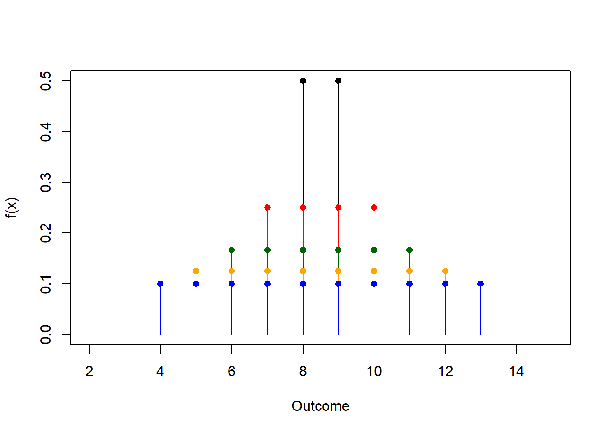

Chapter 7 Modelos de probabilidad para variables aleatorias discretas
7.1 Objetivo
Modelos probabilidad:
- Funciones de probabilidad uniforme y de Bernoulli
- Funciones de probabilidad binomial y binomial negativa
7.2 Función de probabilidad
Una función de masa de probabilidad de una variable aleatoria discreta \(X\) con valores posibles \(x_1 , x_2 , .. , x_M\) es cualquier función tal que
es positiva:
- \(f(x_i)\geq 0\)
Nos permite calcular probabilidades:
- \(f(x_i)=P(X=x_i)\)
La probabilidad de observar algún resultado es \(1\)
- \(\sum_{i=1}^M f(x_i)=1\)
Propiedades:
Tendencia central:
- \(E(X)= \sum_{i=1}^M x_i f(x_i)\)
Dispersión:
- \(V(X)= \sum_{i=1}^M (x_i-\mu)^2 f(x_i)\)
Son objetos abstractos con propiedades generales que pueden o no describir un proceso natural o de ingeniería.
7.3 Modelo de probabilidad
Un modelo de probabilidad es una función de masa de probabilidad que puede representar las probabilidades de un experimento aleatorio.
Ejemplos:
\(f(x)=P(X=x)=1/6\) representa la probabilidad de los resultados de una tirada de dados.
La función de masa de probabilidad
| \(X\) | \(f(x)\) |
|---|---|
| \(-2\) | \(1/8\) |
| \(-1\) | \(2/8\) |
| \(0\) | \(2/8\) |
| \(1\) | \(2/8\) |
| \(2\) | \(1/8\) |
Representa la probabilidad de sacar una bola de una urna donde hay dos bolas por etiqueta: \(-1, 0, 1\) y una bola por etiqueta: \(-2, 2\).
7.4 Modelos paramétricos
Cuando realizamos un experimento aleatorio y no sabemos las probabilidades de los resultados:
- Siempre podemos formular el modelo dado por las frecuencias relativas: \(\hat{P}(X=x_i)=f_i\) (donde \(i=1...M\)).
Necesitamos encontrar \(M\) números cada uno dependiendo de \(N\).
En muchos casos:
- Podemos formular funciones de probabilidad \(f(x)\) que dependen solamente de muy pocos números.
Ejemplo:
Un experimento aleatorio con \(M\) resultados igualmente probables tiene una función de masa de probabilidad: \[f(x)=P(X=x)=1/M\]
Solo necesitamos saber \(M\).
Los números que necesitamos saber para determinar completamente una función de probabilidad se llaman parámetros.
7.5 Distribución uniforme (un parámetro)
Definición Una variable aleatoria \(X\) con resultados \(\{1,...M\}\) tiene una distribución uniforme discreta si todos sus resultados \(M\) tienen la misma probabilidad
\[f(x)=\frac{1}{M}\]
Con media y varianza:
\(E(X)= \frac{M+1}{2}\)
\(V(X)= \frac{M^2-1}{12}\)
Nota: \(E(X)\) y \(V(X)\) también son parámetros. Si conocemos alguno de ellos, entonces podemos determinar completamente la distribución.
\[f(x)=\frac{1}{2E(X)-1}\]

7.7 Distribución uniforme (dos parámetros)
Presentemos un nuevo modelo de probabilidad uniforme con dos parámetros: los resultados mínimo y máximo.
Si la variable aleatoria toma valores en \(\{a, a+1, ...b\}\), donde \(a\) y \(b\) son números enteros y todos los resultados son igualmente probables, entonces
\[f(x)=\frac{1}{b-a+1}\]
como \(M=b-a+1\).
- Entonces decimos que \(X\) se distribuye uniformemente entre \(a\) y \(b\) y escribimos
\[X \rightarrow Unif(a,b)\]
7.8 Distribución uniforme (dos parámetros)
Ejemplo:
¿Cuál es la probabilidad de observar a un niño de una edad particular en una escuela primaria (si todas las clases tienen la misma cantidad de niños)?
Del experimento sabemos: \(a=6\) y \(b=11\) entonces
\[X \rightarrow Unif(a=6, b=11)\] eso es
\[f(x)=\frac{1}{6}\] para \(x\in \{6,7,8,9,10,11\}\), y \(0\) en caso contrario

7.9 Distribución uniforme
El modelo de probabilidad de una variable aleatoria \(X\)
\[f(x)=\frac{1}{b-a+1}\]
para \(x \in \{a, a+1, ...b\}\)
tiene media y varianza:
\(E(X)= \frac{b+a}{2}\)
\(V(X)= \frac{(b-a+1)^2-1}{12}\)
(Cambiar variables \(X=Y+a-1\), \(y \in \{1,...M\}\))
Podemos especificar \(a\) y \(b\) o \(E(X)\) y \(V(X)\).
En nuestro ejemplo:
- \(E(X)=(11+6)/2=8.5\)
- \(V(X)=(6^2-1)/12=2.916667\)
7.11 Parámetros y Modelos
Un modelo es una función particular \(f(x)\) que describe nuestro experimento
Si el modelo es una función conocida que depende de algunos parámetros, al cambiar el valor de los parámetros producimos una familia de modelos
El conocimiento de \(f(x)\) se reduce al conocimiento del valor de los parámetros
Idealmente, el modelo y los parámetros son interpretables
Ejemplo:
Modelo: Los datos de nuestro experimento se producen mediante un proceso aleatorio en el que cada edad tiene la misma probabilidad de ser observada.
Parámetros: \(a\) es la edad mínima, \(E(X)\) es la edad esperada… son propiedades físicas del experimento.
7.12 Parámetros y Modelos
Ejemplo:
Una familia de modelos obtenidos a partir de distribuciones uniformes de dos parámetros cambiando las varianzas y manteniendo una media constante (\(E(X)=8.5\)). Da como resultado cambiar los resultados mínimo y máximo.
- Nota: solo un modelo tiene sentido para nuestro experimento (solo un modelo puede representar las edades de los niños en una escuela).

- Podemos pensar en familias que cambian solo en la media, solo el mínimo o solo el máximo
7.13 Ensayo de Bernoulli
Intentemos avanzar desde el caso de probabilidad igual y supongamos un modelo con dos resultados (\(A\) y \(B\)) que tienen probabilidades desiguales
Ejemplos:
Anotar el sexo de un paciente que acude a urgencias de un hospital (\(A:masculino\) y \(B:femenino\)).
Registrar si una máquina fabricada está defectuosa o no (\(A:defectuosa\) y \(B:buena\)).
Dar en el blanco (\(A:éxito\) y \(B:fracaso\)).
Transmitiendo un píxel correctamente (\(A:sí\) y \(B:no\)).
En estos ejemplos, la probabilidad del resultado \(A\) suele ser desconocida.
7.14 Ensayo de Bernoulli
Introduciremos la probabilidad de un resultado (\(A\)) como el parámetro del modelo:
- resultado A (éxito): tiene probabilidad \(p\) (parámetro)
- resultado B (fracaso): tiene una probabilidad \(1-p\)
O podemos escribir la función de masa de probabilidad de \(K\) tomando valores \(\{0, 1\}\) para \(A\) y \(B\)
\[ f(k)= \begin{cases} 1-p,& k=0\, (evento\, B)\\ p,& k=1\, (evento\, A) \end{cases} \]
o más en breve
\[f(k; p)=(1-p)^{1-k} p^k\] para \(k=(0,1)\)
Solo necesitamos saber \(p\).
7.15 Ensayo de Bernoulli
Una variable de Bernoulli \(K\) con resultados \(\{0, 1\}\) tiene una función de masa de probabilidad
\[f(k; p)=(1-p)^{1-k} p^k\] Con media y varianza:
\(E(K)=p\)
\(V(K)=(1-p)p\)
Nota:
La probabilidad del resultado \(A\) es el parámetro \(p\) que es lo mismo que \(f(0)=P(X=0)\).
Como \(p\) suele ser desconocido, normalmente lo estimamos por la frecuencia relativa (más sobre esto en las secciones de inferencia): \(\hat{p}=f_A=\frac{n_A}{N}\)
7.17 Distribución binomial
Cuando estamos interesados en aprender sobre un ensayo de Bernoulli en particular
Repetimos el ensayo de Bernoulli \(N\) veces y contamos cuantas veces obtuvimos \(A\) (\(n_A\)).
Definimos una variable aleatoria \(X=n_A\) tomando valores \(x \in {0,1,...N}\)
Ahora preguntamos por la probabilidad de observar \(x\) eventos de tipo \(A\) en la repetición de \(n\) ensayos independientes de Bernoulli, cuando la probabilidad de observar \(A\) es \(p\).
\[P(X=x)=f(x)=?\]
7.18 Ejemplos: distribución binomial
Anotar el sexo de \(n=10\) pacientes que acuden a urgencias de un hospital. ¿Cuál es la probabilidad de que \(x=6\) los pacientes sean hombres cuando \(p=0,9\)?
Intentar \(n=5\) veces para dar en el blanco (\(A:éxito\) y \(B:fracaso\)). ¿Cuál es la probabilidad de que alcance el objetivo \(x=5\) veces cuando normalmente lo hago el \(20\%\) de las veces (\(p=0,25\))?
Transmitiendo \(n=100\) píxeles correctamente (\(A:sí\) y \(B:no\)). ¿Cuál es la probabilidad de que \(x=2\) píxeles sean errores, cuando la probabilidad de error es \(p=0,1\)?
7.19 Distribución binomial
¿Cuál es la probabilidad de observar \(X=4\) errores al transmitir \(4\) píxeles, si la probabilidad de error es \(p\)?
Considere las variables aleatorias \(4\): \(K_1\), \(K_2\), \(K_3\) y \(K_4\) que registran si se ha cometido un error en el \(1^{o}\), \(2^{o}\), \(3^{r}\) y \(4^{o}\) píxel.
Por lo tanto
\(k_i\) toma valores \(\{correcto:0; error:1\}\)
\(X=\sum_{i=1}^4 K_i\) toma valores \(\{0,1,2,3,4\}\)
Entonces la probabilidad de observar \(4\) errores es:
- \(P(X=4)=P(1,1,1,1)=p*p*p*p=p^4\) porque \(K_i\) son independientes.
La probabilidad de observar \(0\) errores es:
- \(P(X=0)=P(0,0,0,0)=(1-p)(1-p)(1-p)(1-p)=(1-p)^4\)
La probabilidad de errores de \(3\) es:
\(P(X=3)=P(0,1,1,1)+P(1,0,1,1)+P(1,1,0,1)+P(1,1,1,0)=4p^3(1-p)^1\)
7.20 Distribución binomial
Por lo tanto, la probabilidad de \(x\) errores es
\[ f(x)= \begin{cases} 1*p^0(1-p)^4 & x=0 \\ 4*p^1(1-p)^3,& x=1 \\ 6*p^2(1-p)^2,& x=2 \\ 4*p^3(1-p)^1,& x=3 \\ 1*p^4(1-p)^0 & x=4 \\ \end{cases} \]
o más en breve
\[f(x)=\binom 4 x p^x(1-p)^{4-x}\] para \(x=0,1,2,3,4\)
donde \(\binom 4 x\) es el número de posibles resultados (transmisiones de \(4\) píxeles) con \(x\) errores.
7.21 Distribución binomial: Definición
La función de probabilidad binomial es la función de masa de probabilidad de observar \(x\) resultados de tipo \(A\) en \(n\) ensayos independientes de Bernoulli, donde \(A\) tiene la misma probabilidad \(p\) en cada ensayo.
La función está dada por
\(f(x)=\binom n x p^x(1-p)^{n-x}\), \(x=0,1,...n\)
\(\binom n x= \frac{n!}{x!(n-x)!}\) se denomina coeficiente binomial y da el número de formas en que se pueden obtener \(x\) eventos de tipo \(A\) en un conjunto de \(n\).
Cuando una variable \(X\) tiene una función de probabilidad binomial decimos que se distribuye binomialmente y escribimos
\[X\rightarrow Bin(n,p)\]
donde \(n\) y \(p\) son parámetros.
7.22 Distribución binomial: Media y Varianza
La media y la varianza de \(X\rightarrow Bin(n,p)\) son
\(E(X)=np\)
\(V(X)=np(1-p)\)
Dado que \(X\) es la suma de \(n\) variables independientes de Bernoulli
\(E(X)=E(\sum_{i=1}^n K_i)=np\)
y
\(V(X)=V(\sum_{i=1}^n K_i)=n(1-p)p\)
Ejemplo:
El valor esperado para el número de errores en la transmisión de 4 píxeles es \(np=4*0.1=0.4\) cuando la probabilidad de error es \(0.1\).
La varianza es \(n(1-p)p=0.36\)
Recuerde: Podemos especificar los parámetros \(n\) y \(p\), o los parámetros \(E(X)\) y \(V(X)\)
7.23 Ejemplo 1
Ahora respondamos:
- ¿Cuál es la probabilidad de observar \(4\) errores al transmitir \(4\) píxeles, si la probabilidad de un error es de \(0.1\)?
Dado que estamos repitiendo una prueba de Bernoulli \(n=4\) veces y contando el número de eventos de tipo \(A\) (errores), cuando \(P(A)=p=0.1\) entonces
\[X \rightarrow Bin(n=4, p=0.1)\] Eso es \[f(x)=\binom 4 x 0.1^x(1-0.1)^{4-x}\]
7.24 Ejemplo 1
- Queremos calcular:
\(P(X=4)=f(4)=\binom 4 4 0.1^4 0.9^{0}=0.1^4=10^{-4}\)
En R dbinom(4,4,0.1)
- También podemos calcular:
\(P(X=2)=\binom 4 2 0.1^2 0.9^2=0.0486\)
En R dbinom(2,4,0.1)
7.25 Ejemplo 2
- ¿Cuál es la probabilidad de observar a lo mucho \(8\) votantes del partido de gobierno en una encuesta electoral de tamaño \(10\), si la probabilidad de un voto positivo es de \(0.9\)?
Para este caso
\[X \rightarrow Bin(n=10, p=0.9)\]
Eso es \[f(x)=\binom {10} x 0.9^x(0.1)^{4-x}\]
Queremos calcular: \(P(X\le 8)=F(8)= \sum_{i=1..8} f(x_i)=0.2639011\)
en R pbinom(8,10, 0.9)

7.27 Distribución binomial negativa
Ahora imaginemos que estamos interesados en contar los píxeles bien transmitidos antes de que ocurra un número dado de errores. Digamos que podemos tolerar \(r\) errores en la transmisión.
Experimento: Supongamos que realizamos ensayos de Bernoulli hasta que observamos que el resultado \(A\) aparece \(r\) veces.
Variable aleatoria: Contamos el número de eventos \(B\)
Ejemplo: ¿Cuál es la probabilidad de observar \(y\) píxeles bien transmitidos (\(B\)) antes de \(r\) errores (\(A\))?
7.28 Distribución binomial negativa
Primero encontremos la probabilidad de una transmisión en particular con \(y\) número de píxeles correctos (\(B\)) y \(r\) número de errores (\(A\)).
\((0,0,1,., 0,1,...0,1)\) (hay \(y\) ceros y \(r\) unos)
Observamos \(y\) píxeles correctos en un total de \(y + r\) intentos.
Por lo tanto
- \(P(0,0,1,., 0,1,...0,1)=(1-p)^yp^r\) (Recuerda: \(p\) es la probabilidad de error)
¿Cuántas transmisiones pueden tener \(y\) píxeles correctos antes de \(r\) errores?
Nota:
El último bit es fijo (marca el final de la transmisión)
El número total de transmisiones con \(y\) número de píxeles correctos (\(B\)) que podemos obtener en \(y + r-1\) intentos es: \(\binom {y + r-1} y\)
7.29 Distribución binomial negativa
Por lo tanto, la probabilidad de observar \(y\) eventos de tipo \(B\) antes de \(r\) eventos de tipo \(A\) (con probabilidad \(p\)) es
\[P(Y=y)=f(y)=\binom {y+r-1} y (1-p)^yp^r\]
para \(y=0,1,...\)
Entonces decimos que \(Y\) sigue una distribución binomial negativa y escribimos
\[Y\rightarrow NB(r,p)\]
donde \(r\) y \(p\) son parámetros que representan la tolerancia y la probabilidad de un solo error.
7.30 Media y Varianza
Una variable aleatoria con \(Y\rightarrow NB(r,p)\) tiene
media: \(E(Y)= r\frac{1-p}{p}\)
varianza: \(V(Y)= r\frac{1-p}{p^2}\)
7.31 Distribución geométrica
Llamamos distribución geométrica a la distribución binomial negativa con \(r=1\)
La probabilidad de observar \(B\) eventos antes de observar el primer evento de tipo \(A\) es
\[P(Y=y)=f(y)= (1-p)^yp\]
\[Y\rightarrow Geom(p)\] con media
media: \(E(Y)= \frac{1-p}{p}\)
varianza: \(V(Y)= \frac{1-p}{p^2}\)
7.32 Ejemplo
Un sitio web tiene tres servidores.
Un servidor opera a la vez y solo cuando falla una solicitud se utiliza otro servidor.
Si se sabe que la probabilidad de que falle una solicitud es \(p=0.0005\), entonces
¿Cuál es el número esperado de solicitudes exitosas antes de que los tres servidores fallen?
7.33 Ejemplo
Ya que estamos repitiendo un ensayo de Bernoulli hasta que se observan \(r=3\) eventos de tipo \(A\) (cada uno con \(P(A)=p=0.0005\)) y estamos contando el número de eventos de tipo \(B\) (errores) entonces
\[Y \rightarrow NB(r=3, p=0.0005)\]
Por lo tanto, el número esperado de solicitudes antes de que el sistema falle es:
\(E(Y)=r\frac{1-p}{p}=3\frac{1-0.0005}{0.0005}=5997\)
- Tenga en cuenta que para enviar este número de solicitures hemos enviado un total de \(6000=5997+3\)
7.34 Ejemplo
¿Cuál es la probabilidad de tratar con éxito como máximo \(5\) solicitudes antes de que el sistema falle?
Recuerde la función de distribución: \(F(y)=P(Y\leq 5)\)
\(F(5)=P(Y\leq 5)=\Sigma_{y=0}^5 f(y)\)
\(=\sum_{y=0}^5\binom {y+2} y 0.9995^y 0.0005^r\)
\(=\binom{2} 0 0.9995^0 0.0005^3 +\binom{3} 1 0.9995^1 0.0005^3\)
\(+\binom{4} 2 0.9995^2 0.0005^3 +\binom{5} 3 0.9995^3 0.0005^3\)
\(+\binom {6} 4 0.9995^4 0.0005^3 +\binom {7} 5 0.9995^5 0.0005^3\)
\(= 6.9\times 10^{-9}\)
En R pnbinom(5,3,0.0005)
7.35 Ejemplos
Con la función de probabilidad binomial negativa:
\[f(y)=\binom {y+r-1} y (1-p)^yp^r\]
Ahora podemos responder preguntas como:
- ¿Cuál es la probabilidad de observar \(10\) píxeles correctos antes de \(2\) errores, si la probabilidad de error es \(0.1\)?
\(f(10; r=2, p=0.1)=0.03835463\)
en R dnbinom(10, 2, 0.1)
- ¿Cuál es la probabilidad de que entren \(2\) chicas antes que \(4\) chicos si la probabilidad de que entre una chica es de \(0.5\)?
\(f(2; r=4, p=0.5)=0.15625\)
en R dnbinom(2, 4, 0.5)

7.37 Resumen de modelos de probabilidad
| modelo | X | rango de x | f(x) | E(X) | V(X) | R |
|---|---|---|---|---|---|---|
| Uniforme | número entero o real | \([a,b]\) | \(\frac{1}{n}\) | \(\frac{b+a}{2}\) | \(\frac{(b-a+1)^2-1}{12}\) | rep(1/n, n), dunif(x, a, b) |
| Bernoulli | evento A | 0,1 | \((1-p)^{1-x}p^x\) | \(p\) | \(p(1-p)\) | c(1-p,p) |
| binomial | # de eventos A en \(n\) repeticiones de ensayos de Bernoulli | 0,1,… | \(\binom n x (1-p)^{n-x}p^x\) | \(np\) | \(np(1-p)\) | dbimon(x,n,p) |
| Binomial negativo para eventos | # de eventos B en repeticiones de Bernoulli antes de \(r\) Como se observan | 0,1,.. | \(\binom {x+r-1} x (1-p)^xp^r\) | \(\frac{r(1-p)}{p}\) | \(\frac{r(1-p)}{p^2}\) | dnbinom(x,r,p) |